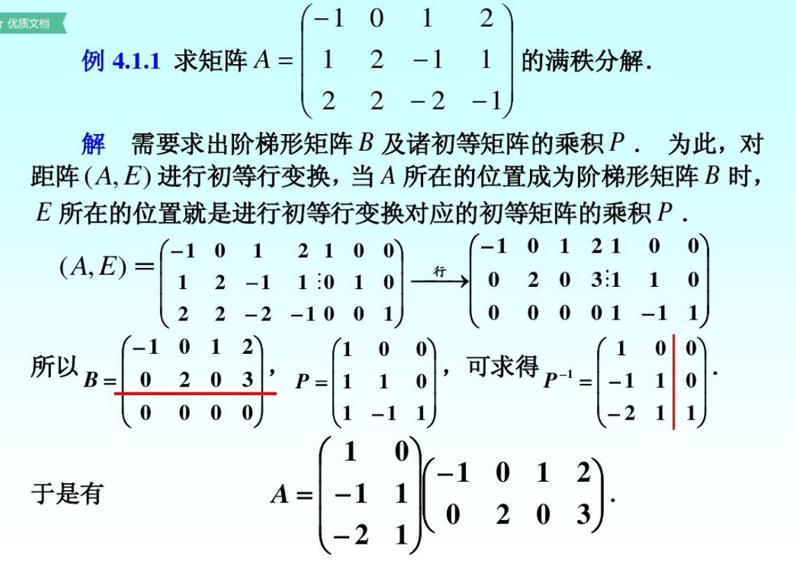
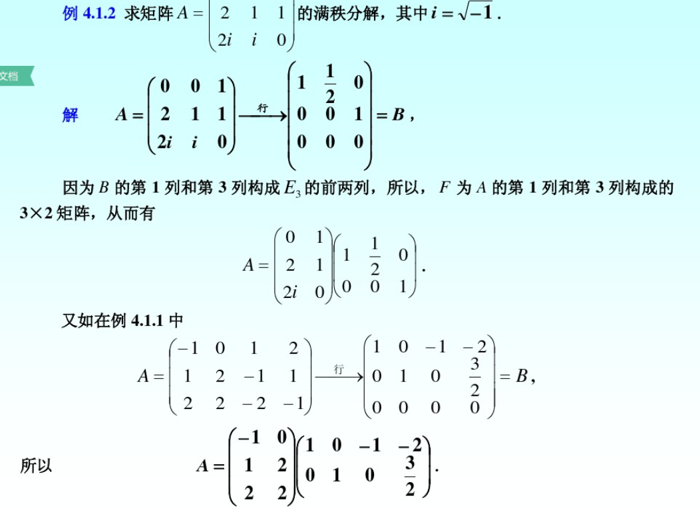

定义：设A∈Cm×n,rank(A)=r,如果存在列满秩矩阵F∈Cm×n和行满秩矩阵G∈Cr×n,使得
A=FG则称上式为矩阵A的满秩分解，当A是满秩（列满秩或行满秩）矩阵时，A可分解为一个单位阵和其本身，称此满秩分解为平凡分解。
定理：设非零阵A∈Cm×n,rank(A)=r,则A有满秩分解。
proof.
rank(A)=r时，对A进行初等行变换为行阶梯型矩阵B，即
ArB=(GO),G∈Cr×n,rank(G)=r
于是存在m阶可逆阵P，使得PA=B或者A=P−1B.将P−1分块为P−1=(F,S),其中
F∈Cm×r,rank(F)=r,S∈Cm×(m−r),rank(S)=m−r,则有：
A=P−1B=(F,S)(GO)=FG
其中F是列满秩矩阵，G是行满秩矩阵
注1：矩阵A的满秩分解不唯一，因为如果取任一r阶非奇异阵，则式可改写为
A=(FD)(D−1G)=F~G~
是A的另一个满秩分解。
注2：由证明过程可以用初等变换的方法求满秩分解。
注意列满秩阵是P逆的前r列,计算量较大

为了避免求逆，引入下面的定义
定义：以n阶单位阵En的n个列向量e1,e2,⋯,en为列打乱顺序构成的n阶矩阵
P=(ej1,ej2,⋯,ejn)称为置换矩阵，这里j1,j2,⋯,jn是1,2，…，n的一个全排列。
如：P=(e3,e4,e1,e2)是一个4阶置换矩阵。
置换矩阵有如下性质
- P是正交阵
- 对任意A∈Cm×n,AP是将A的列按j1,j2,⋯,jn的次序重新排列得到的矩阵。
我们已知，任意非零秩r阵A，可以通过初等行变换化为行最简形，且B的前r行线性无关。
定理：设A∈Cm×n,rank(A)=r(r>0),A的行最简形矩阵为B，那么在A的满秩分解中，可取F为A的j1,j2,⋯,jr列所构成的m×r矩阵，G为B的前r行构成的r×n矩阵。
下面确定列满秩矩阵F，参照A的行最简形矩阵B作n阶置换矩阵
P1=(ej1,⋯,ejr,ejr+1,⋯,ejn)按列划分A=(α1,⋯,αn),B=(β1,β2,⋯,βn)有
AP1=(αj1,⋯,αjr,αjr+1,⋯,αjn) BP1=(βj1,⋯,βjr,βjr+1,⋯,βjn)=(ErOB12O)
其中B12∈Cr×(n−r)，再由A=P−1B,可得
AP1=P−1(BP1)=(F,S)(ErOB12O)=(F,FB12)
即F为AP1的前r列构成的矩阵，也就是A的j1,j2,⋯,jr列构成的矩阵。
利用上述定理求A的满秩分解时，需要首先求出A的行最简形矩阵B，但并未用到矩阵P，因此不需求。

(Schur定理)若A∈Cn×n,则存在酉矩阵，使得
UHAU=T
其中T为上三角矩阵，T的主对角线上的元素都是A的特征值。
（QR分解定理）设A为n阶复矩阵，则存在酉矩阵Q及上三角矩阵R，使得
A=QR
定义：设A为n阶复矩阵，若
AHA=AAH
则称A为正规矩阵
显然：对角阵、实对称矩阵(A=AT)、实反对称矩阵(AT=−A)、正交矩阵(A−1=AT)、Hermite矩阵(A=AH),反Hermite矩阵(AH=−A),酉矩阵(A−1=AH)都是正规矩阵
注：正规矩阵并不只有上述这些。
引理：设A∈Cm×n,则：
- AHA,AAH的特征值全为非负实数。
- AHA,AAH的非零特征值相同，并且非零特征值的个数（重特征值按重数算）等于rank(A)
- rank(AHA)=rank(AAH)=rank(A)
定义：设A∈Cm×n,rank(A)=r(r>0),矩阵AHA的特征值为
λ1≥λ2≥⋯≥λr>λr+1=⋯=λn=0则称σi=λi(i=1,2,⋯,n)为A的奇异值。
易见，A的奇异值的个数等于A的列数，A的非零奇异值的个数等于rank(A)
定理(奇异值分解)设A∈Cm×n，则存在m阶酉阵U和n阶酉阵V，使得
A=USVH=σ1u1v1H+σ2u2v2H+⋯+σrurvrH其中S=diag(σ1,⋯,σn)∈Rm×n,σi>0(i=1,⋯,r),r=rank(A)
推论：在矩阵A的奇异值分解A=USVH中，U的列向量为AAH的特征向量，V的列向量为AHA的特征向量。
proof.
∵AAH==∴(AAH)U=(USVH)(USVH)HUSVHVSHUH=USSHUHUSSH=Udiag(λ1,λ2,⋯,λr,0,⋯,0)记U=(u1,⋯,um),则(AAH)ui=λiui,i=1,⋯,m